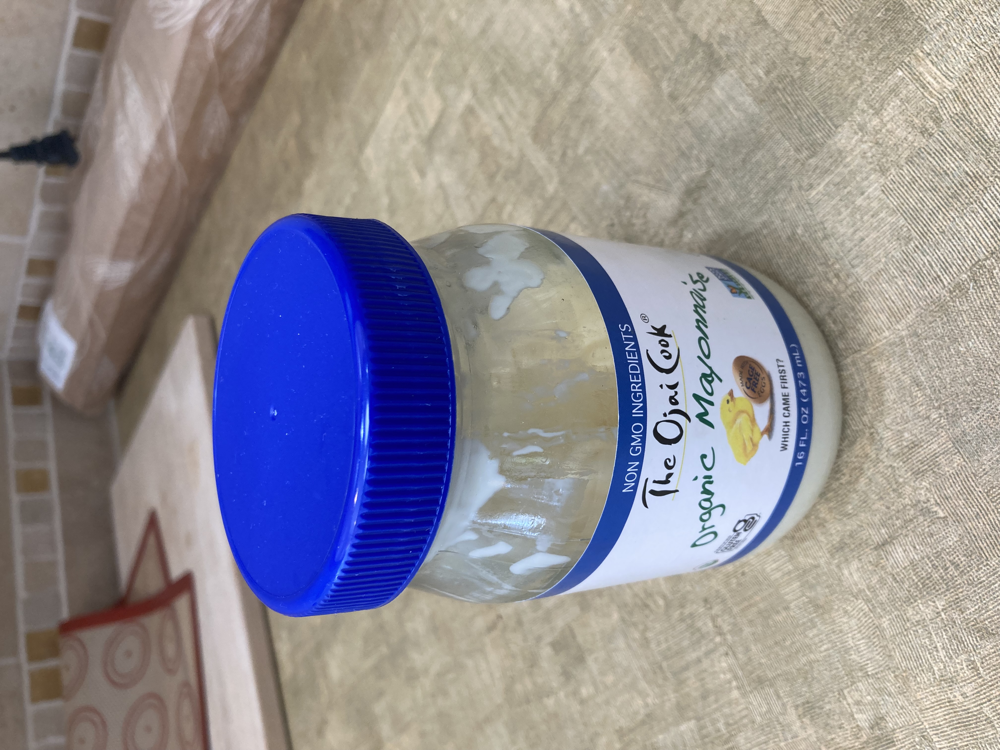

Tamarind Mayo

Description
I decided this might be a good idea one day and boy was I right! I
think it tastes particularly delightful in sushi and with
avocado fries. Whatever you use this for, I hope you will enjoy it!
Ingredients
- Tamarind paste
- Mayonnaise
- Lime (optional)
Steps
- Add some tamarind paste to some mayonnaise.
- Adjust the proportions to your liking.
- If you'd like an extra kick, add a bit of lime jest or juice!
Back to home page